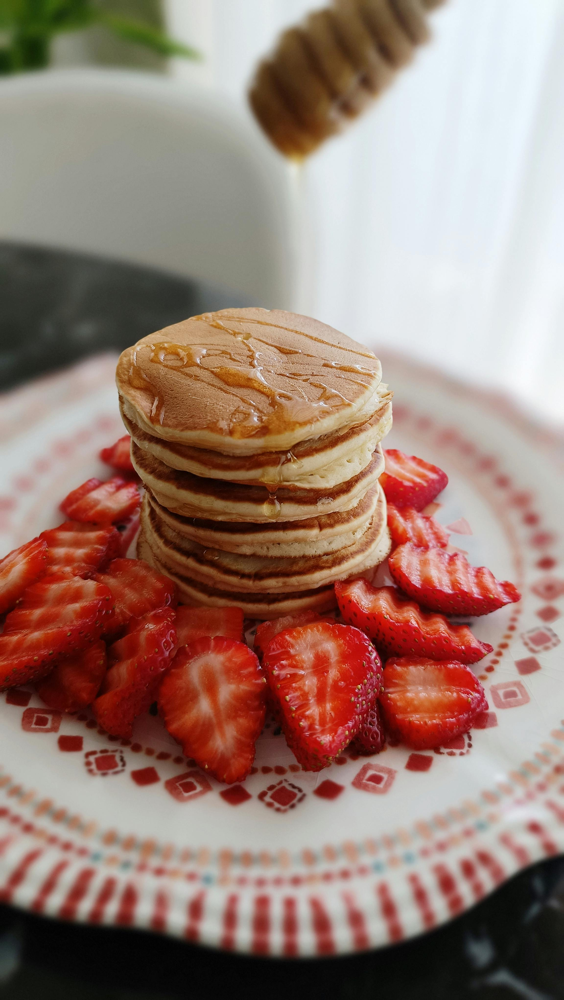

Home
Pancakes

A pancake is a flat, round, starch-based cake made from batter, fried on a hot surface like a griddle or pan. Typically served for breakfast, they are soft, fluffy, and often stacked
Ingredients:
- Flour
- Baking powder
- sugar
- salt
- Milk
- Butter
- Egg
Preparation:
- Gather all ingredients.
- Sift flour, baking powder, sugar, and salt together in a large bowl. Make a well in the center and add milk, melted butter, and egg; mix until smooth.
- Heat a lightly oiled griddle or pan over medium-high heat. Pour or scoop the batter onto the griddle, using approximately 1/4 cup for each pancake; cook until bubbles form and the edges are dry, about 2 to 3 minutes.
- Flip and cook until browned on the other side. Repeat with remaining batter.
- Serve and enjoy!